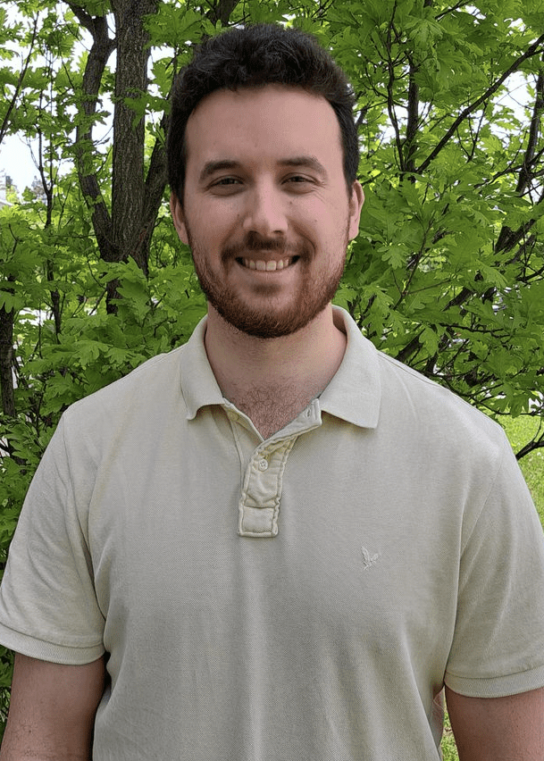
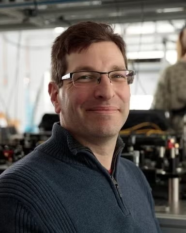
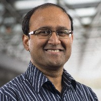

Master's Research
Electrically tunable nanowire quantum-dot sources of entangled photons
For my M.Sc. in Physics, I'm developing nanoscale photonic devices that generate entangled photons on demand — and working toward making those sources bright, reproducible, and ready to integrate into scalable photonic systems. The goal is a building block for quantum communication and the long-distance quantum networks often called the quantum internet.
Part 1
What the group works on
The bigger scientific picture my lab pursues: building bright, high-quality entangled-photon sources and the path toward scalable quantum photonic systems.
The research question
Quantum technologies rely on moving delicate quantum information between distant places. But quantum signals carried by light fade quickly in optical fiber — in practice, entanglement can only be distributed over roughly 100 km before it's lost. Extending that range requires quantum repeaters, devices that stitch together entanglement from separate sources using a process called entanglement swapping.
For that to work, two independent photon sources must produce photons that are nearly identical — same wavelength, same quality. The central question of my research: can we build entangled-photon sources that are bright, high-quality, and tunable enough for two separate devices to be matched to one another, while keeping the photons easy to collect? That combination is what a practical quantum repeater demands, and it's hard to achieve all at once.
Why entangled photons?
Entanglement is a uniquely quantum link between particles: measuring one instantly tells you about the other, no matter how far apart they are. Photons — particles of light — are the natural carriers of this link over distance because they travel fast and interact weakly with their surroundings.
That makes entangled photons a foundational resource for quantum technologies. In quantum communication they enable protocols that are secure in a way classical signals can't be, and they're the currency that quantum repeaters and quantum networks pass between nodes. If we want to connect quantum computers or distribute quantum-secured information across cities and continents, we need reliable, on-demand sources of high-quality entangled photons.
Quantum-dot entangled-photon sources
A semiconductor quantum dot (QD) is a nanoscale region of semiconductor that traps electrons so tightly it behaves like an artificial atom, emitting light at well-defined energies. Quantum dots are among the most promising on-demand sources of entangled photons: they can emit a single pair of entangled photons at a time, on command, through a two-step process called the biexciton–exciton cascade. The resulting photons can be highly indistinguishable and are compatible with atomic quantum memories — both important for networking.
"On-demand" matters because many quantum protocols need photons to arrive predictably, one pair at a time, rather than at random. But several practical challenges stand in the way of using quantum dots in a real quantum repeater:
Small variations in emission wavelength between different dots stop their photons from interfering with each other.
Charge noise in the dot's environment blurs the photons and reduces their indistinguishability.
Photons are emitted in all directions, so extraction efficiency — getting them into a fiber — is hard to keep high.
A well-established fix for extraction is to grow the quantum dot inside a tapered nanowire, which funnels the emitted light into a clean, fiber-friendly beam, with a mirror underneath to send more light upward. My work builds on this platform and tackles the wavelength and charge-noise challenges directly.
Device engineering
My research centers on fabricating and testing an electrically controlled version of the nanowire quantum-dot source, based on a scheme proposed and simulated by my supervisor. The device adds electrodes around and beneath the nanowire so that we can shape the electric field the quantum dot experiences:
- Four raised gold electrodes surrounding the nanowire quantum dot, used to apply controlled electric fields.
- A bottom gold pad the nanowire sits on, which does double duty: it acts as a mirror to improve photon extraction and as an electrode to stabilize the dot's charge environment.
By applying precise fields through these electrodes, the plan is to use the Stark effect — the shift of emission wavelength under an electric field — to tune one dot's output so it matches another independent dot. Stabilizing the charge environment should sharpen the photons (better indistinguishability), while the bottom mirror keeps photon-pair extraction high. In other words, one device aims to address all three challenges at once: wavelength matching, charge noise, and extraction efficiency.
For context, earlier work in the group on a related platform has reached single-photon extraction efficiencies around 70%, photon-pair extraction around 50%, and entanglement fidelities as high as 98% — among the strongest reported for this kind of source. My work aims to build on that foundation with added electrical control.
Toward integrated, scalable photonics
A single excellent source is only the start. For quantum repeaters and networks to scale, sources like these eventually need to connect into larger photonic systems that can route and manipulate photons reliably — ideally on a chip rather than across a table of free-space optics.
Making the source bright, spectrally tunable, and reproducible is a deliberate step in that direction: those are exactly the properties that let independent devices be matched and combined. Integration into scalable photonic platforms is the longer-term goal that motivates the device work rather than a task I have completed, and it's the direction I'm building toward.
Part 2
What I do
My specific contribution within that effort — the hands-on fabrication, testing, and characterization, plus who I work with and where things stand.
How I do the work
The project spans the full arc from making devices to measuring quantum light. My hands-on contribution is the nanofabrication and testing of the electrode nanostructures. The quantum dots themselves are grown by collaborators at the National Research Council (NRC), and an established deterministic transfer process places them at the University of Waterloo's Quantum-Nano Fabrication and Characterization Facility (QNFCF).
Fabrication
I'm certified on the cleanroom nanofabrication tools at QNFCF and use them to build the electrode structures. Techniques include:
- Electron-beam and UV lithography to define nanoscale patterns
- Thin-film deposition — PECVD (plasma-enhanced chemical vapor deposition) and electron-beam physical vapor deposition
- Reactive-ion etching for pattern transfer
- Wet-bench processing and SEM (scanning electron microscope) inspection
Simulation & modelling
I draw on electromagnetic and optical modelling to inform device design and interpret measurements. My simulation toolkit includes FDTD (finite-difference time-domain) electromagnetic simulation and transfer-matrix methods, along with Python for data analysis.
Supervision & committee
My M.Sc. advisory committee consists of my supervisor, one faculty member from the Department of Physics and Astronomy, and one faculty member from another University of Waterloo department. I also work day to day with a postdoctoral researcher in the group.
Prof. Michael E. Reimer
Supervisor
Leads the Quantum Photonic Devices Lab. The electrically tunable nanowire quantum-dot device I'm building is based on a scheme he proposed and simulated.

Dr. Stephen Harrigan
Postdoctoral researcher · day-to-day mentor
A postdoctoral researcher in the group I work closely with day to day. He earned his PhD in this group in 2026.

Prof. François Sfigakis
Committee member · University of Waterloo
A member of my advisory committee and a faculty member at the University of Waterloo, based at the Institute for Quantum Computing.

Prof. Kazi Rajibul Islam
Committee member · Physics & Astronomy
A member of my advisory committee and a faculty member in the Department of Physics and Astronomy, leading the QITI Lab.